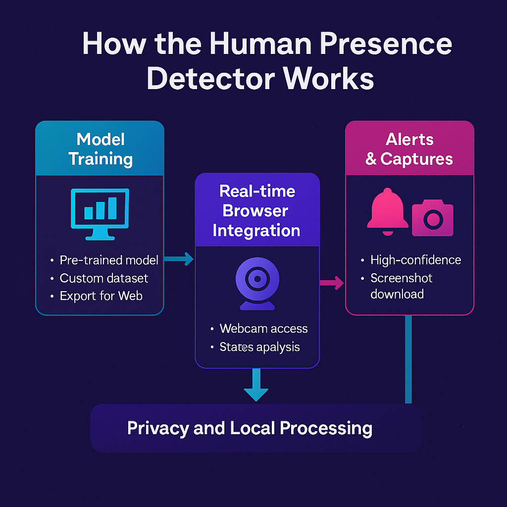

How the Human Presence Detector Works
This project leverages the power of Machine Learning right in your browser to detect human presence in real-time using your webcam feed. Here's a breakdown of the core components and the process:
1. Model Training with Teachable Machine
Pre-trained Model:
The heart of the detection system is a pre-trained machine learning model created using
Google's Teachable Machine.
Custom Dataset:
The model was trained on a custom dataset consisting of two classes: “Person Present” and “No Person”.
Export for Web:
The model is exported in a format compatible with TensorFlow.js.
2. Real-time Browser Integration
Webcam Access:
The application uses the WebRTC API to access your device’s camera.
Frame Analysis:
Each webcam frame is processed by the model to detect the presence of a human.
Live Status Update:
The detection status on-screen is updated in real time based on model predictions.
3. Privacy and Local Processing
All detection runs locally in your browser — your webcam feed is never sent to a server, ensuring full privacy and security.

A conceptual diagram showing the flow of the detection process.